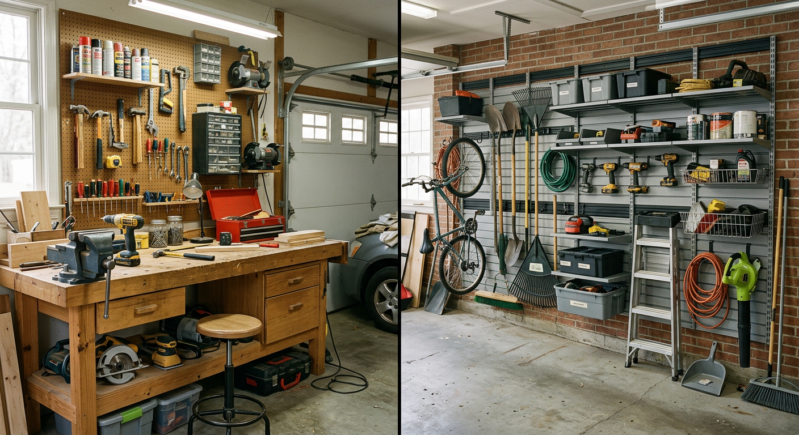

Workbench vs Wall Storage

Updated for 2026
Disclosure: As an Amazon Associate, we may earn from qualifying purchases.
Quick Verdict: Which System Fits Your Garage?
| If your priority is... | Best choice | Why it wins | Action |
|---|---|---|---|
| Hands-on DIY projects | Workbench first | Gives you a stable, dedicated workspace for repairs and builds | Compare garage workbenches |
| Clearing floor clutter fast | Wall system first | Moves tools and accessories vertical to free parking and walking space | Compare wall storage systems |
| Balanced long-term setup | Hybrid layout | Combines a work surface with high-visibility tool access | See hybrid-ready kits |
Most homeowners get best results with hybrid: start with one core system now, then add the second in the same zone for a cleaner workflow.
Workbench vs Wall Storage: Side-by-Side Comparison
| Factor | Workbench | Wall Storage System |
|---|---|---|
| Primary function | Build, repair, and assembly surface | Tool visibility and grab-and-go access |
| Floor footprint | Medium to large | Low floor usage |
| Install complexity | Low (mostly freestanding) | Moderate (stud anchoring and layout planning) |
| Scalability | Moderate (bigger bench or add-ons) | High (expand rails/panels/hooks over time) |
| Best buyer profile | Frequent DIY and mechanical tasks | Storage-first households with limited floor space |
Budget Planning: What to Buy First
| Budget range | Recommended move | Reason |
|---|---|---|
| Under $200 | Start with a compact wall kit | Fastest visible decluttering per dollar in smaller garages |
| $200-$500 | Choose one solid workbench + basic hook rail | Creates both function (work zone) and daily tool access |
| $500+ | Build a hybrid station (bench + full wall zone) | Delivers highest long-term efficiency and upgrade flexibility |
Revenue-safe buying strategy: avoid spreading budget thin across low-quality pieces. One durable anchor purchase beats multiple weak upgrades.
Common Mistakes (and How to Avoid Them)
- Buying a bench that blocks vehicle doors: Tape the footprint on the floor first and test parking clearance.
- Overloading wall rails without stud planning: Map stud locations before purchase to match your storage load.
- Separating tools from work zone: Keep frequently used tools within one arm’s reach of the bench area.
- Ignoring expansion path: Pick modular systems so future hooks, shelves, and bins fit your initial setup.
Best Layout by Garage Type
| Garage type | Recommended layout | Why it works | Action |
|---|---|---|---|
| Single-car / tight bay | Wall system + fold-down bench | Keeps floor flexible while preserving a usable work area | See fold-down bench options |
| Standard 2-car garage | Fixed bench on one side + full tool wall above | Creates an efficient dedicated station without sacrificing parking | See 2-car hybrid options |
| Workshop-focused garage | Heavy bench + multi-bay wall system | Supports frequent project turnover and better tool category zoning | See workshop-grade setups |
Top Buyer-Ready Kits by Garage Goal
| Your goal | Recommended kit path | Why this is high-probability | Action |
|---|---|---|---|
| Keep parking flexibility in a tight garage | Fold-down bench + modular wall kit | Creates a usable work zone without permanent floor loss | Shop compact hybrid kits |
| Build a balanced family garage station | Fixed workbench + drawer storage + wall rail | Covers DIY tasks while improving daily grab-and-go tool access | Shop 2-car hybrid kits |
| Upgrade to workshop-grade productivity | Heavy-duty bench + pegboard wall system | Supports heavier loads and faster tool resets between projects | Shop workshop-grade kits |
Execution shortcut: choose the one path that matches your garage constraint, buy that base kit first, and add accessories only after one week of real use.
Frequently Asked Questions
Is a workbench or wall storage better for a small garage?
For small garages, wall storage usually wins because it keeps the floor open for parking and movement. A compact fold-down bench can still add a work surface without taking permanent floor space.
What should I buy first: a workbench or wall panels?
If you do regular hands-on projects, start with a sturdy workbench. If clutter and tool access are your biggest pain points, start with wall storage and add a bench second.
Can I combine both systems effectively?
Yes. The highest-performing layout for most households is a hybrid: one durable workbench zone plus a wall system directly above or beside it for frequently used tools.
How much weight can garage wall systems hold?
Weight capacity varies by rail, panel, and stud spacing. Follow manufacturer ratings exactly and anchor into studs for heavy tools or loaded bins.
Related guides: best garage shelving systems and garage storage bin picks.
Why Trust This Guide
This comparison is based on buyer-intent patterns, garage layout constraints, and practical setup sequencing used to help households choose storage systems with lower regret and better long-term usability.